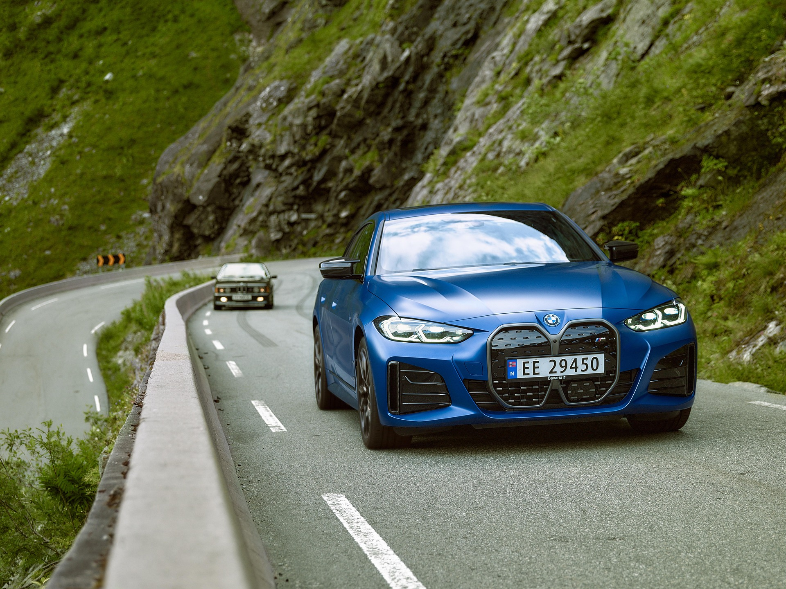
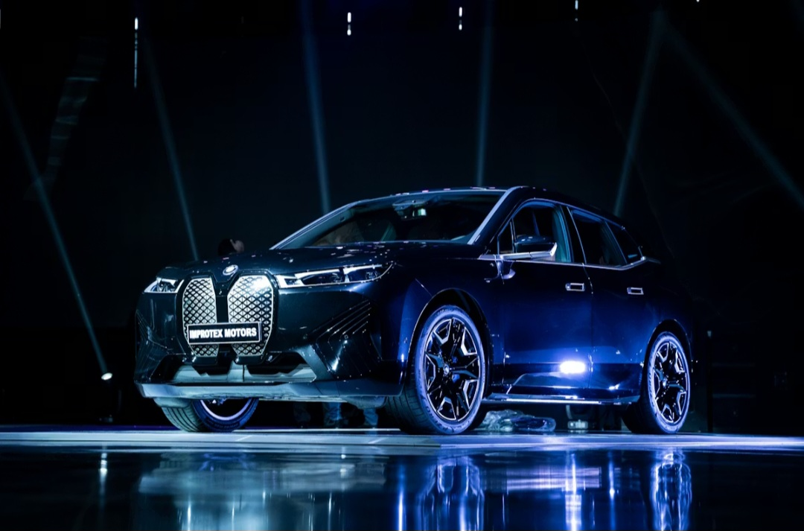

BMW M electric vehicles offer instant torque with cutting-edge technology which helps maintain the brand BMW M by offering exquisite performance.

An all electric gran coupé with two electric motors powering it, they produce 536hp and 583Nm of torque. The range is up to 512km at most.
The BMW iX M60 is a high performance flagship electric SUV also has two electric motors but it has alot more power. It puts out 610hp and 1000Nm of torque. Its range varies from 499km to 566km depending on the type of wheels or high load configuration.